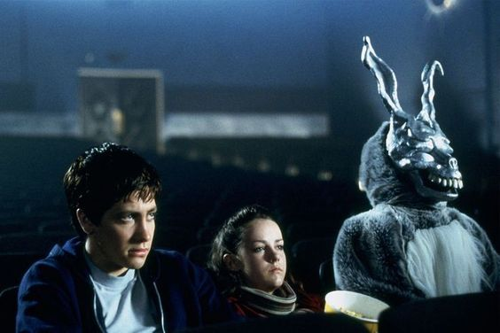

Title: Donnie Darko
Released: 2001
Genre: Science Fiction Thriller
Director: Richard Kelly
Cinematographer: Steven Poster
This is a cult classic film directed by Richard Kelly, released in 2001. The movie follows Donnie Darko, a troubled teenager who narrowly escapes death when a mysterious figure in a rabbit costume, Frank, warns him of the impending apocalypse. Donnie begins to experience bizarre occurrences, including visions of Frank and a distorted reality. As Donnie navigates his increasingly strange world, he grapples with existential questions about fate, time travel, and the nature of reality. The film blends elements of science fiction, psychological thriller, and coming-of-age drama, leaving viewers to interpret its complex narrative and themes.
